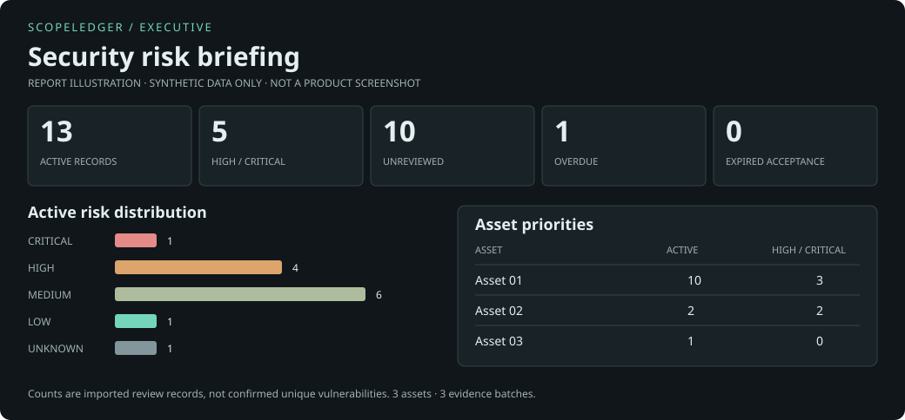

SCOPELEDGER EXECUTIVE / 0.6.1 DEVELOPMENT CANDIDATEEvidence-led security decisions.
Authorized configuration review, scoped risk reconciliation, threat context, dependency review and executive reporting. Local single-operator development candidate; Korean interface and English report.
Free synthetic exercise · Sample executive briefing · Request evaluation

A one-time license is planned. Checkout is not active. Do not send payment or sensitive information. Actual enterprise deployment, scanner/model/feed execution, and enterprise controls remain unverified or unavailable.